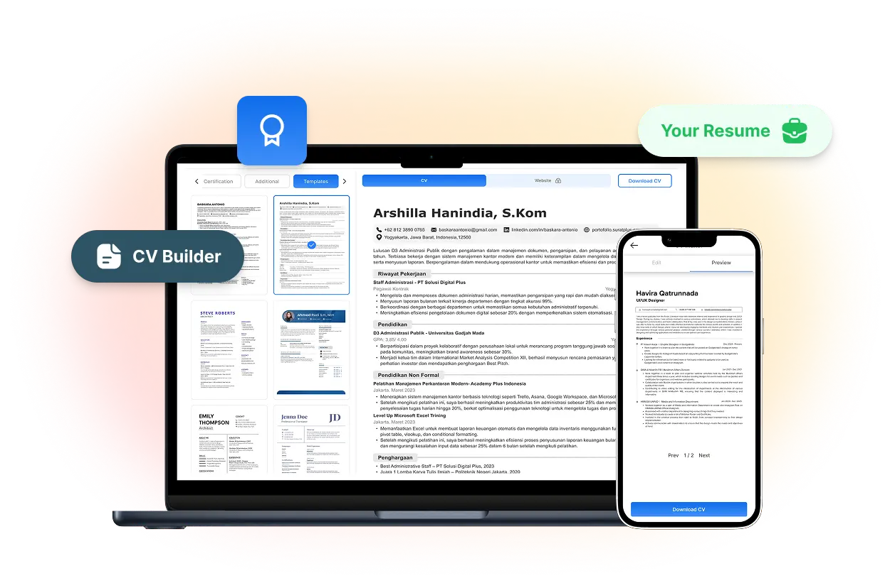
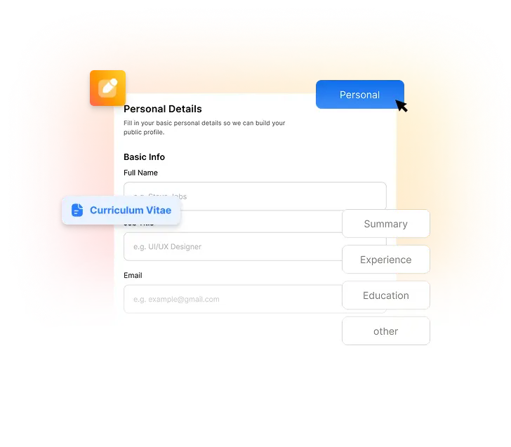
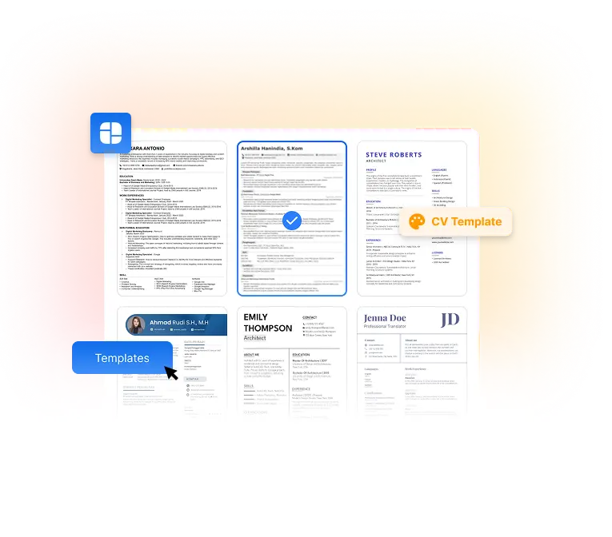
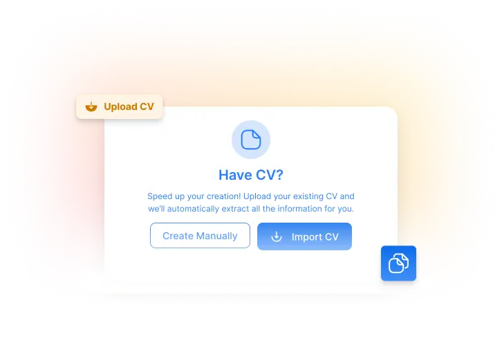
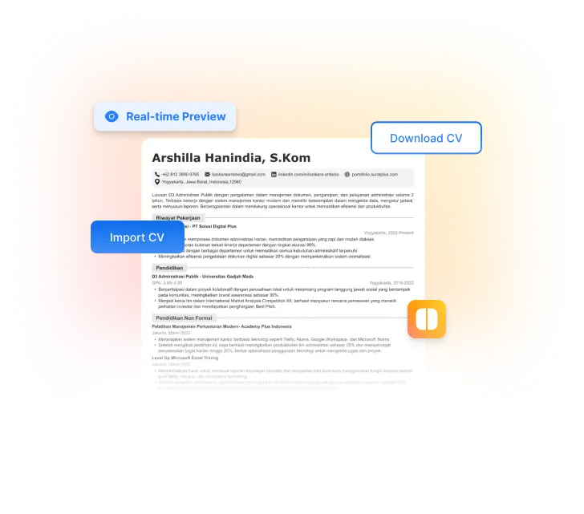

Optimalkan CV-mu
Susun CV yang rapi, modern, dan ATS-friendly dalam hitungan menit tanpa ribet.

Banyak CV gagal bukan karena kurang pengalaman, tapi karena:
Format CV tidak mengikuti struktur yang umum digunakan di dunia kerja.
CV sulit dibaca oleh sistem ATS yang digunakan perusahaan saat proses seleksi.
Informasi dalam CV terlalu banyak atau tidak tersusun dengan jelas.
Tampilan CV kurang rapi dan tidak mencerminkan kesan profesional.
CV Maker membantu kamu menyusun CV yang tepat, terstruktur, dan siap dikirim ke recruiter.
Susun CV profesional yang rapi, terstruktur, dan sesuai standar industri dalam beberapa langkah sederhana.
Isi informasi penting untuk membangun CV yang lengkap, terstruktur, dan siap dikirim ke recruiter.


Gunakan berbagai pilihan desain CV yang telah disesuaikan dengan standar industri dan ramah ATS.
Unggah CV lama untuk mengisi data profil secara otomatis.


Rekaman interview kamu akan otomatis ditampilkan sebagai introduction video.
Dapatkan pengalaman kerja nyata, bangun portfolio yang membuatmu menonjol, dan terhubung dengan peluang kerja. Semua hanya dengan Rp 180.000
Slot Terbatas! Harga Promo Khusus Bulan Ini!